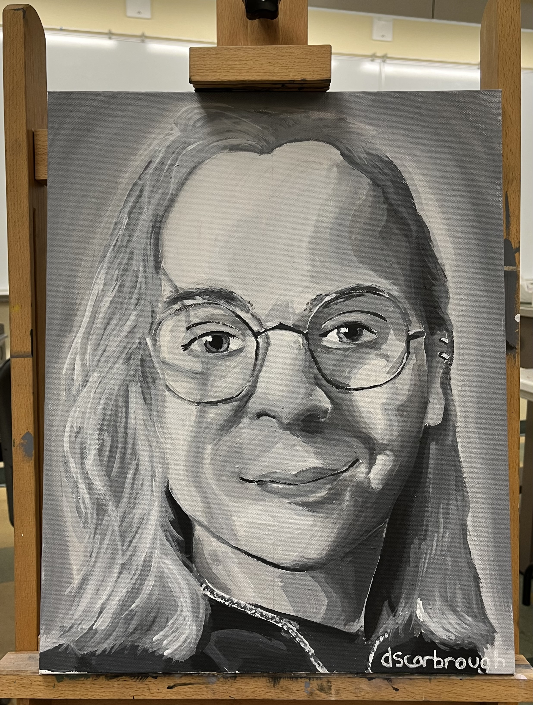

About Me

My name is Daniel Scarbrough, and I am a recent electrical engineering graduate. I was born and raised in Arkansas, went to school in Texas at LeTourneau University, and am eager to continue to travel and see new places.
I am passionate about control systems and embedded firmware, particularly when combined with automation and robotics. I graduated with a concentration in mechatronics and a minor in computer science, giving me a wide
understanding of programming, kinematics, and circuitry. My personal favorite project has to be the machine vision system I designed for my senior design project, where I used YOLO computer vision to track and estimate
golf ball positions in real time.
While I am not working with electronics, I enjoy creative arts, particularly drawing and painting. I often spend time at home with my family and my fluffy goldendoodle.